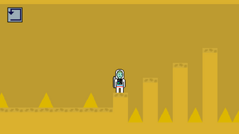
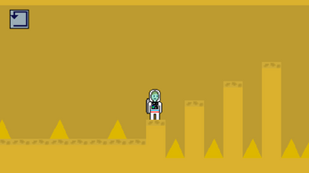

Neil's Shift
Bilsemler Arası Dijital Oyun Yarışması kapsamında Ödemiş Bilsem'den arkadaşım Miral Kerem Özcan ile yapmış olduğumuz Neil's Shift oyunu benim şu ana dek yapmış olduğum en uzun soluklu oyundur.Ayrıca bu yarışmada oyunumuz Türkiye 3.'sü olmuştur.
Oyunumuzun hikayesi kısaca:
2035 yılında Dünya için kaynak arayışına çıkan astronotumuz Neil Gagarin'in farklı gezegenlerde yaşadığı çeşitli maceralardır.
Bu süre zarfında kimi zaman yıldırımlardan kimi zaman göktaşlarından kaçmaya çalışırken karşısına bilinen dayanıklı yaratık olan tardigradalar çıkar ve bunlarla mücadele eder.
Bu tardigradlar bulundakları gezegene göre adapte olmuşlar ve kimisin ağzından alev topu,kimisinin ağzından hortum,kimisininkinden ise buz topu çıkar.

Oyunu yüklemek için linke tıklayıp "Download" butonuna basın
 
